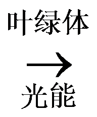
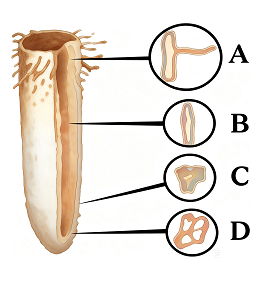
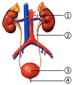
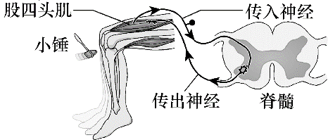
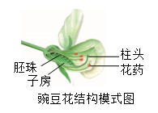
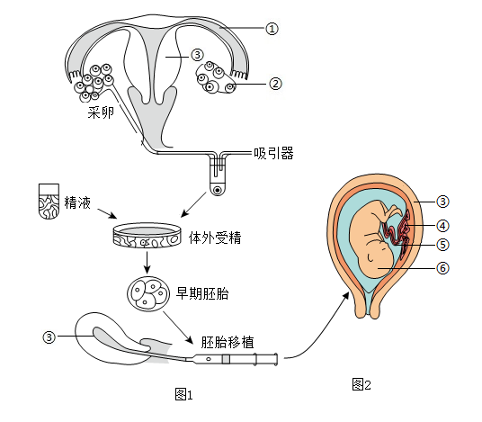

2026年北京平谷区初中学业合格考试生物试卷 原卷解析
北京市平谷区2026年初中学业合格考试
生物试卷
第一部分
注意事项:
1.本试卷共6页，包括两部分，满分60分，考试时间60分钟。
2.在答题卡上准确填写学校名称、班级和姓名。
3.试题答案一律填涂或书写在答题卡上，在试卷上作答无效。
4.在答题卡上，选择题用2B铅笔作答，其他试题用黑色字迹签字笔作答。
5.考试结束，请将答题卡交回。
本部分共25题，每题1分，共25分。在每题列出的四个选项中，选出最符合题目要求的一项。
1. 北京的市树和市花分别是（ ）
A. 松树、梧桐；玉兰、牡丹
B. 雪松、梧桐；串红、丁香
C. 国槐、侧柏；月季、菊花
D. 银杏、毛白杨；丁香、牡丹
【答案】C
【解析】
【详解】A．松树、梧桐并非北京市市树，玉兰、牡丹也不是北京市市花，A错误。
B．雪松、梧桐并非北京市市树，串红、丁香也不是北京市市花，B错误。
C．北京市的市树为国槐、侧柏，市花为月季、菊花，C正确。
D．银杏、毛白杨并非北京市市树，丁香、牡丹也不是北京市市花，D错误。
2. 细胞中控制生物发育和遗传的结构是（ ）
A. 细胞壁B. 细胞膜C. 细胞质D. 细胞核
【答案】D
【解析】
【分析】细胞核含有遗传物质，是细胞代谢和遗传的控制中心，负责生物的发育和遗传。
【详解】A．细胞壁主要起保护和支持作用，与遗传无关，故A不符合题意。
B．细胞膜控制物质进出细胞，不涉及遗传调控，故B不符合题意。
C．细胞质是细胞代谢的主要场所，但遗传控制由细胞核完成，故C不符合题意。
D．细胞核含有DNA，是遗传信息库，控制生物的发育和遗传，故D符合题意。
故选D。
3. 下图①—⑤为某光学显微镜的5个镜头，①、②、③为物镜，④、⑤为目镜 (×表示放大倍数)。若要使视野中观察到的单个细胞体积最大，在下列目镜和物镜的组合中应选择（ ）

A. ①和④B. ②和⑤C. ③和④D. ③和⑤
【答案】D
【解析】
【详解】显微镜放大倍数=目镜放大倍数×物镜放大倍数。显微镜放大倍数越大，细胞数目越少，细胞越大；反之，放大倍数越小，细胞数目越多，细胞越小。①和④放大了40倍，②和⑤放大了160倍，③和④放大了400倍，③和⑤放大了640倍。可知，要使视野中观察到的单个细胞体积最大，目镜和物镜的组合中应选择③和⑤，放大的倍数最大。D符合题意，ABC不符合题意。
4. 衣藻是生活在水中的单细胞藻类能独立完成生命活动。下列叙述错误的是（ ）

A. 身体由一个细胞构成
B. 在细胞内完成食物的消化
C. 通过神经进行调节
D. 自己制造有机营养
【答案】C
【解析】
【详解】A．衣藻属于单细胞藻类，整个生物体只由一个细胞构成，A正确。
B．衣藻是单细胞生物，所有生命活动（包括物质代谢、营养处理）都在这一个细胞内完成，B正确。
C．神经是多细胞动物分化出的结构，衣藻仅为一个细胞，没有神经系统、神经结构，无法通过神经进行调节，C错误。
D．衣藻细胞内有叶绿体，可以通过光合作用合成有机物，属于自养生物，D正确。
5. 一朵百合花在结构层次上属于（ ）
A. 细胞B. 组织C. 器官D. 植物体
【答案】C
【解析】
【分析】器官是由几种不同的组织构成的，这些组织按一定的次序联合起来，形成具有一定功能的结构。
【详解】植物体的结构层次由小到大依次是细胞→组织→器官→植物体。常见的绿色开花植物由根、茎、叶、花、果实、种子六大器官组成。器官是由几种不同的组织构成的，这些组织按一定的次序联合起来，形成具有一定功能的结构。一朵百合花是由几种不同的组织构成的，具有一定功能的结构，都属于器官。故选C。
【点睛】解答关键是理解器官的概念。
6. 关于蒸腾作用对植物自身和生物圈的作用，下列叙述不合理的是（）
A. 增加大气中氧气含量B. 增加周围环境湿度
C. 促进水和无机盐运输D. 降低叶片表面温度
【答案】A
【解析】
【分析】蒸腾作用是植物体内的水分通过叶片上的气孔以水蒸气状态散失到大气中的过程。根吸收的水分99%都通过蒸腾作用散失了。蒸腾作用为大气提供大量的水蒸气，增加空气湿度，降雨量增多，促进了生物圈中的水循环，这是蒸腾作用在自然界中的作用；蒸腾作用散失大量的水分，吸收热量，使气温降低，降低植物体特别是叶片的温度避免灼烧，从而也降低了环境的温度，能调节气候；蒸腾作用为大气提供大量的水蒸气，促进了水和无机盐向上的运输，可见蒸腾作用对植物的生活具有重要的意义。
【详解】A.蒸腾作用为大气提供大量的水蒸气，植物进行光合作用增加大气中氧气含量，A错误。
B.蒸腾作用为大气提供大量的水蒸气，增加空气湿度，降雨量增多，促进了生物圈中的水循环，B正确。
C.蒸腾作用为大气提供大量的水蒸气，促进了水和无机盐在植物体内的运输，C正确。
D.蒸腾作用散失大量的水分，吸收热量，使气温降低，降低植物体特别是叶片的温度避免灼烧，D正确。
故选A。
【点睛】蒸腾作用的意义在中考中经常出现，注意理解和掌握。
7. 在蔬菜大棚中，菜农常使用“气肥”来提高蔬菜的产量，“气肥”指的是（ ）
A. 氧气B. 水蒸气C. 氮气D. 二氧化碳
【答案】D
【解析】
【分析】根据光合作用的原理进行分析解答，光合作用是绿色植物通过叶绿体，利用光能，把二氧化碳和水转化成贮存着能量的有机物（主要是淀粉），并且释放出氧气的过程。
【详解】绿色植物通过叶绿体，利用光能，把二氧化碳和水转化成贮存着能量的有机物（主要是淀粉），并且释放出氧气的过程，就是绿色植物的光合作用。反应式是：二氧化碳+水

有机物（储存能量）+氧气，原料中二氧化碳是气体。在温室中种植蔬菜，要使蔬菜产量得到提高，就要提高蔬菜的光合作用的效率，而光合作用的原料之一是二氧化碳，所以，向温室中添加二氧化碳，就可以提高光合作用的效率，从而提高蔬菜产量。所以向大棚内施加的气肥是二氧化碳。故选D。【点睛】此题考查了光合作用的原理在农业生产上的应用。
8. 在桃树根尖的结构中，吸收水和无机盐的主要部位是（ ）

A. 成熟区B. 伸长区C. 分生区D. 根冠
【答案】A
【解析】
【详解】A．成熟区也叫根毛区，在伸长区的上部，细胞停止伸长，并且开始分化，表皮细胞一部分向外突起形成根毛，是吸收水分和无机盐的主要部位，A符合题意。
B．伸长区在分生区上部，细胞逐渐停止分裂，开始迅速伸长，是根伸长最快的地方，能够吸收水分和无机盐，B不符合题意。
C．分生区被根冠包围着，有很强的分裂能力，能够不断分裂产生新细胞，C不符合题意。
D．根冠位于根的顶端，属于保护组织，细胞比较大，排列不够整齐，像一顶帽子似地套在外面，具有保护作用，D不符合题意。
9. 某人常吃钙片补钙，但血液中钙含量仍低于正常值。可能的原因是体内缺少（ ）
A. 维生素AB. 维生素B1C. 维生素CD. 维生素D
【答案】D
【解析】
【分析】维生素既不参与构成人体细胞，也不为人体提供能量，而且人体对它的需要量很小，但它对人体的各项生命活动有重要的作用；人体一旦缺乏维生素，就会影响正常的生长和发育，还会引起疾病。
【详解】缺钙和缺乏维生素D都患佝偻病和骨质疏松症；是因为维生素D能够促进钙、磷的吸收，缺维生素D一定会导致缺钙。补钙的关键在于吸收，吸收的关键在于维生素D。通常补钙的同时，也要补维生素D。据此可知，某人经常吃钙片补钙，但血液中钙含量仍低于正常值，最可能的原因是体内缺少维生素D。
【点睛】解答此题的关键是知道维生素D影响钙的吸收和利用，补钙的同时，也要补维生素D。
10. 从营养均衡的角度来看，下列午餐食谱所选食物搭配最合理的是（ ）
A. 炸鸡腿、薯条、饼干、可乐
B. 馒头、酱牛肉、炒白菜、紫菜汤
C. 米饭、炒芹菜、炒菜花、酸奶
D. 面包、香肠、红烧肉、牛奶
【答案】B
【解析】
【详解】A．炸鸡腿含蛋白质和脂肪，薯条、饼干、可乐主要提供糖类，缺少维生素、无机盐等营养物质，A不符合题意。
B．馒头提供糖类，酱牛肉提供蛋白质和脂肪，炒白菜、紫菜汤提供维生素、无机盐等，营养物质全面均衡，B符合题意。
C．米饭提供糖类，炒芹菜、炒菜花提供维生素和无机盐，酸奶提供蛋白质，缺少脂肪类营养物质，营养不够全面，C不符合题意。
D．面包提供糖类，香肠、红烧肉提供蛋白质和脂肪，牛奶提供蛋白质，缺少维生素、无机盐等营养物质，D不符合题意。
11. 如图为人体消化系统结构模式图。下列叙述不正确的是

A. 淀粉在①中被彻底消化成葡萄糖
B. 蛋白质在②处被初步消化
C. ③分泌的消化液含消化淀粉、脂肪、蛋白质的酶
D. 脂肪在④中开始被消化
【答案】A
【解析】
【分析】人体的消化系统包括消化道和消化腺两部分；消化道包括口腔、咽、食道、胃、小肠、大肠、肛门；消化腺主要有唾液腺、胃腺、肠腺、胰腺、肝脏等，肝脏是人体内最大的消化腺。图中结构：①是口腔，②是胃，③是胰腺，④是小肠，据此解答。
【详解】A．淀粉的消化从①口腔开始，口腔中的唾液淀粉酶能够将部分淀粉分解为麦芽糖，当淀粉和麦芽糖进入小肠后，被彻底消化为葡萄糖，A错误。
B．②胃内只含有胃液，胃液中含有能够初步消化蛋白质的胃蛋白酶，可初步消化蛋白质，B正确。
C．③胰腺分泌的消化液含有多种消化酶，对淀粉、蛋白质和脂肪三种物质都有消化作用，C正确。
D．脂肪的消化开始于④小肠，最终分解为甘油和脂肪酸，D正确。
故选A。
【点睛】明确各消化器官的结构和功能是解题的关键。
12. 日常体检时，医生常用橡皮软管扎紧上臂，然后在血管鼓胀处抽血。针刺入的鼓胀处位于橡皮软管
A. 软管与手之间的静脉B. 软管与肩部之间的静脉
C. 软管与手之间的动脉D. 软管与肩部之间的动脉
【答案】A
【解析】
【分析】血管的类型和功能如下表：

【详解】在静脉血管内，血液是从远心端流向近心端的，用乳胶管扎紧上臂后，在结扎处的远心端的静脉会因血液滞留而膨大，同时，又因静脉内具有防止血液倒流的静脉瓣，所以血液不会倒流而会出现结状突起。所以在抽血或输液时，要在针刺入的部位的上方（近心端）用橡皮管捆扎紧起来，其原因是减缓或暂时阻止血液向心流动，让软管与手之间的静脉鼓胀起来，便于针刺入。
故选A。
【点睛】对于血管的结构和功能，可通过列表比较这三种血管。
13. 坚持一段时间的适度运动，血液中红细胞数量会增多，这有利于
A. 运输氧气B. 止血凝血
C. 产生氧气D. 吞噬病菌
【答案】A
【解析】
【分析】血液的组成包括血浆和血细胞，血细胞包括红细胞、白细胞和血小板。红细胞富含血红蛋白，血红蛋白是一种红色含铁的蛋白质，它在氧浓度高的地方与氧结合，在氧浓度低的地方与氧分离。
【详解】运动一段时间后，机体对氧气的需求量增加高。此时，身体会做相应的调节，血液中的红细胞数量的含量会增加，这样参与运输氧的红细胞的数量增多，可以运输更多的氧，来满足人体对氧气的需要，A符合题意。
故选A。
【点睛】熟知红细胞的功能是解答本题的关键。
14. 肺的功能单位是
A. 呼吸性细支气管B. 细支气管C. 肺泡管D. 肺泡
【答案】D
【解析】
【分析】
肺是呼吸系统的主要器官，是气体交换的场所。左右支气管进入左右两肺后反复分支，愈分愈细，形成许多树枝状的分支，分支到细支气管时，管壁的软骨环消失，管壁几乎全部由平滑肌构成，细支气管再分支到呼吸性细支气管时，其管壁的某些部分向外突出形成肺泡。肺泡是肺的功能单位，与呼吸性细支气管相通，壁很薄，由一层上皮细胞构成。
【详解】肺的功能是进行气体交换，而肺进行气体交换的场所是肺泡，因此肺泡是肺的功能单位，同时，从肺的结构来看，肺泡又是肺的结构单位，如图所示：
 。
。
故选D。
【点睛】肺泡是肺的功能和结构单位。理解肺是由大量的肺泡组成。
15. 人在溺水时，首先受到阻碍的呼吸过程是（ ）
A. 肺与外界的气体交换B. 肺泡与血液间的气体交换
C. 气体在血液中的运输D. 血液与组织细胞间的气体交换
【答案】A
【解析】
【分析】呼吸过程包括四个环节：肺与外界的气体交换（肺通气）、肺泡与血液间的气体交换、气体在血液中的运输、血液与组织细胞的气体交换。
【详解】A．溺水时，水进入呼吸道，直接阻塞空气进出肺部的通道，导致无法进行肺通气（即肺与外界的气体交换），这是呼吸过程的第一步，故A符合题意。
B．肺泡与血液间的气体交换需在空气进入肺泡后才能进行，此时因肺通气受阻，此步骤尚未发生，故B不符合题意。
C．气体在血液中的运输需氧气进入血液后才发生，此时氧气未进入肺泡和血液，故C不符合题意。
D．血液与组织细胞的气体交换是最后一步，此时氧气尚未运输到组织细胞，故D不符合题意。
故选A。
16. 下图示泌尿系统组成，其中形成尿液的器官是（ ）

A. ①肾脏B. ②输尿管C. ③膀胱D. ④尿道
【答案】A
【解析】
【分析】本题考查泌尿系统的组成，难度适中。①为肾脏，②为输尿管，③为膀胱，④为尿道。
【详解】A．①为肾脏，肾脏的作用是形成尿液，A正确。
B． ②为输尿管，输尿管的作用是输送尿液，B错误。
C．③为膀胱，膀胱的作用是暂存尿液，C错误。
D．④为尿道，尿道的功能是排出尿液，D错误。
故选A。
17. 关于汗液的成分和排汗的作用，下列说法不正确的是（ ）
A. 汗液的成分中绝大多数是水
B. 排汗可以排出部分代谢废物
C. 排汗有助于维持体内环境的稳定
D. 在人剧烈运动时汗液分泌不会增加
【答案】D
【解析】
【详解】A．汗液的成分中绝大多数是水，还含有少量无机盐、尿素等物质，A正确。
B．排汗可以排出尿素、无机盐等部分代谢废物，B正确。
C．排汗能够调节体温，同时排出代谢废物，有助于维持体内环境的稳定，C正确。
D．人剧烈运动时产热量显著增加，为维持体温恒定，汗液分泌会增加以增强散热，D错误。
18. 膝跳反射可用于检测神经系统对刺激产生反应的状况。据图分析，以下相关叙述错误的是

A. 该反射属于非条件反射
B. 该反射的神经中枢位于脊髓
C. 股四头肌收缩带动小腿抬起
D. 传出神经受损该反射依旧能完成
【答案】D
【解析】
【分析】神经调节的基本方式是反射，是指在中枢神经系统参与下，动物体或人体对内环境刺激所发生的有规律的反应。完成反射的结构基础是反射弧，通常由感受器→传入神经→神经中枢→传出神经→效应器（传出神经末梢和它所支配的肌肉或腺体）组成。反射活动需要经过完整的反射弧来实现，若反射弧中任何环节在结构或功能上受损,反射就不能完成。
【详解】A．该反射的神经中枢位于脊髓，属于非条件反射，A正确。
B．由题图可知：该反射的神经中枢位于脊髓，B正确。
C．完成反射的结构基础是反射弧，通常由感受器→传入神经→神经中枢→传出神经→效应器（传出神经末梢和它所支配的肌肉或腺体）组成。由题图可知，股四头肌是膝跳反射的效应器，故其收缩能带动小腿抬起，C正确。
D．反射的进行必须保证反射弧的完整性，若传出神经受损，人不能完成该反射，D错误。
故选D。
19. 在种子萌发过程中，最先突破种皮的结构是（ ）
A. 胚乳B. 胚芽C. 胚根D. 胚轴
【答案】C
【解析】
【详解】种子萌发时，首先吸收水分，随后子叶或胚乳中的营养物质逐渐转运给胚根、胚芽、胚轴，胚根会率先突破种皮发育形成根，之后胚轴伸长，胚芽发育成茎和叶，C正确，ABD错误。
20. 在大自然中到处都有动物的踪迹，下列动物中都属于脊椎动物的一项是（ ）
A. 蚂蚁和大象B. 狮子和老虎
C. 燕子和蝗虫D. 牛和蜗牛
【答案】B
【解析】
【详解】A．蚂蚁属于节肢动物，体内无脊柱，是无脊椎动物；大象属于哺乳动物，体内有脊柱，是脊椎动物，二者并非都属于脊椎动物，A错误。
B．狮子和老虎都属于哺乳动物，体内均有由脊椎骨构成的脊柱，都属于脊椎动物，B正确。
C．燕子属于鸟类，是脊椎动物；蝗虫属于节肢动物，是无脊椎动物，二者并非都属于脊椎动物，C错误。
D．牛属于哺乳动物，是脊椎动物；蜗牛属于软体动物，是无脊椎动物，二者并非都属于脊椎动物，D错误。
21. 以下四种常见的海棠品种中，与其他三类亲缘关系最远的是（ ）
A. 西府海棠 Malus micromalus
B. 垂丝海棠 Malus halliana
C. 贴梗海棠 Chaenomeles speciosa
D. 梨花海棠 Malus spectabilis
【答案】C
【解析】
【详解】西府海棠的属名为Malus，与垂丝海棠和梨花海棠的属名相同，三者的亲缘关系较近；贴梗海棠的属名为Chaenomeles，与西府海棠 、垂丝海棠和梨花海棠的属名均不同，贴梗海棠与其他三类亲缘关系最远，故C符合题意，ABD不符合题意。
22. 银杏是我国特有树种，银杏的种子俗称白果，种子外无果皮包被。由此可知银杏属于（ ）
A. 苔藓植物B. 蕨类植物C. 裸子植物D. 被子植物
【答案】C
【解析】
【详解】A．苔藓植物无真正的根，不产生种子，依靠孢子繁殖后代，A错误。
B．蕨类植物有根、茎、叶的分化，依靠孢子繁殖，不产生种子，B错误。
C．裸子植物的核心特征是种子裸露，无果皮包被，题干中银杏种子外无果皮包被，符合裸子植物的特征，C正确。
D．被子植物的种子外有果皮包被，能形成果实，与题干描述不符，D错误。
23. 小林在学校的综合实践活动中制作下列食品时，利用的主要微生物错误的是（ ）
A. 馒头—酵母菌B. 酸奶—乳酸菌
C. 果醋—醋酸（杆）菌D. 泡菜—霉菌
【答案】D
【解析】
【分析】微生物的发酵技术在食品、药品的制作中具有重要意义，如制馒头、面包和酿酒要用到酵母菌，制酸奶和泡菜要用到乳酸菌，制醋要用到醋酸杆菌，利用青霉发酵可以提取出青霉素等。
【详解】A．馒头的制作过程中，酵母菌起到了关键作用。酵母菌在面团中发酵，产生二氧化碳气体，二氧化碳遇热时能够使面团膨胀，蒸制后形成松软的馒头，A正确。
B．酸奶的制作依赖于乳酸菌。乳酸菌在无氧条件下通过发酵作用，将牛奶中的乳糖转化为乳酸，赋予酸奶特有的酸味和口感，B正确。
C．果醋的制作主要使用醋酸菌。醋酸菌能够将酒精转化为醋酸，是果醋发酵过程中的主要微生物，C正确。
D．泡菜的制作实际上依赖于乳酸菌，而不是霉菌。乳酸菌通过发酵作用，使泡菜具有独特的酸味和口感，并有助于保存泡菜的新鲜度，D错误。
故选D。
24. 科研人员将某基因转入奶牛的细胞中，培育出的新品种奶牛能够产生乳糖含量较低的牛奶，从而使患有乳糖不耐症的人群受益。该过程中主要利用的是
A. 组织培养技术B. 转基因技术C. 克隆技术D. 发酵技术
【答案】B
【解析】
【分析】转基因技术是指运用科学手段从某种生物中提取所需要的基因，将其转入另一种生物中，使与另一种生物的基因进行重组，从而培育出转基因生物。
【详解】将人工分离和修饰过的基因导入到生物体基因组中，由于导入基因的表达，引起生物体的性状的可遗传的修饰，这一技术称之为转基因技术，人们常说的“遗传工程”、“基因工程”、“遗传转化”均为转基因的同义词。经转基因技术修饰的生物体在媒体上常被称为“遗传修饰过的生物体”。由于将人工分离和修饰过的基因导入到生物体基因组中，从而改变了生物的基因、结构和功能。科研人员将某基因转入奶牛的细胞中，培育出的新品种奶牛能够产生乳糖含量较低的牛奶，该过程所利用的生物技术是转基因技术。
故选B。
【点睛】解答此题的关键是了解转基因技术的概念、过程、原理，通过举例来证明基因控制生物的性状。
25. 同学们正处于生长发育的关键时期，选择健康的生活方式十分重要。下列不属于中学生健康生活方式的是（ ）
A. 不吸烟、不酗酒，远离毒品
B. 为了取得好成绩，经常熬夜学习
C. 按时作息有规律，坚持体育锻炼
D. 遇到困惑或者问题积极与其他人交流
【答案】B
【解析】
【详解】A．不吸烟、不酗酒，远离毒品属于健康的生活方式，A不符合题意。
B．经常熬夜学习会打乱正常作息规律，影响身体正常生长发育与健康状态，不属于健康生活方式，B符合题意。
C．按时作息有规律，坚持体育锻炼有助于提升身体素质，属于健康生活方式，C不符合题意。
D．遇到困惑或问题积极与他人交流，能有效维护心理健康，属于健康生活方式，D不符合题意。
第二部分
本部分共5题，每空1分，共35分。
26. 国槐是我国北方常见的行道树。表中分别记录了某一天空气中二氧化碳浓度及国槐叶片细胞间二氧化碳浓度的变化。
表1空气中二氧化碳浓度变化表
时刻 | 8：00 | 10：00 | 12：00 | 14：00 | 16：00 | 18：00 |
空气中二氧化碳浓度/（µmol˙m-2˙s-1） | 381 | 295 | 343 | 248 | 246 | 260 |
（1）二氧化碳通过_______(填结构名称)进出叶片。
（2）根据表1中信息可知，在_______时，空气中二氧化碳浓度最高，其原因可能是_______。
A.植物光合作用强，吸收二氧化碳多
B.空气中的二氧化碳被风吹走了
C.夜间植物只进行呼吸作用产生二氧化碳，经过一夜积累
D.夜间植物既不进行光合作用也不进行呼吸作用
表2国槐叶片细胞间二氧化碳浓度变化表
时刻 | 8：00 | 10：00 | 12：00 | 14：00 | 16：00 | 18：00 |
国槐叶片细胞间二氧化碳浓度/（µmol˙m-2˙s-1） | 214.5 | 77.06 | 205.6 | 220.6 | 234.2 | 250.1 |
（3）比较表1和表2数据，在10：00时________(填“国槐叶片细胞间”或“空气中”)二氧化碳浓度更低，其原因是此时国槐叶片细胞通过_______作用消耗二氧化碳的速率_______(填“大于”、“小于”或“等于”)植物呼吸释放二氧化碳的速率。
（4）通过以上获得的信息，你帮助体育运动爱好者选择一个适合运动的时间_______。
【答案】（1）气孔 （2） ①. 8:00 ②. C
（3） ①. 国槐叶片细胞间 ②. 光合 ③. 大于
（4）16:00
【解析】
【小问1详解】
气孔是植物叶片与外界进行气体交换的门户，二氧化碳作为气体，通过气孔进出叶片完成气体交换。
【小问2详解】
查看表1数据，8：00时空气中二氧化碳浓度为381μmol·m-2·s-1，是一天中最高值。原因是夜间无光照，植物无法进行光合作用吸收二氧化碳，仅能通过呼吸作用释放二氧化碳，经过一夜积累，清晨空气中二氧化碳浓度达到峰值，C符合题意，ABD不符合题意。
【小问3详解】
对比表1和表2中10：00的数据，空气中二氧化碳浓度为295μmol·m-2·s-1，国槐叶片细胞间为77.06μmol·m-2·s-1，因此细胞间浓度更低。此时国槐光合作用消耗二氧化碳的速率大于呼吸作用释放二氧化碳的速率，细胞间的二氧化碳被大量用于光合作用，导致叶片间二氧化碳浓度低于空气中的二氧化碳浓度。
【小问4详解】
运动需要充足的氧气，空气中二氧化碳浓度越低，氧气相对含量越高。从表1数据可知，14：00~16：00期间空气中二氧化碳浓度最低，其中16：00时浓度为246μmol·m-2·s-1，此时氧气含量较高，适合体育运动。
27. 豌豆常用于遗传学研究。

（1）豌豆花瓣尚未打开时，花蕊就已经成熟，花粉散落在柱头上完成传粉和_______作用。由此可见豌豆是_______填“自花传粉”或“异花传粉”)的植物。
（2）豌豆的花色性状属于________(填“形态结构”、“生理”或“行为”).方面的特征。豌豆花的紫色和白色是一对________紫花豌豆的子代仍开紫花，此现象称为_____。
（3）著名学者________(填“孟德尔’，或“达尔文”)通过豌豆杂交实验发现了遗传规律，性状遗传的现象才开始逐渐得到科学的解释。他的豌豆杂交实验表明，豌豆的花色基因是在有性生殖过程中通过_______细胞传递给后代的，并控制着后代的性状。
【答案】（1） ①. 受精 ②. 自花传粉
（2） ①. 形态结构 ②. 相对性状 ③. 遗传
（3） ①. 孟德尔 ②. 生殖
【解析】
【小问1详解】
绿色开花植物形成果实和种子，必须依次完成传粉和受精两个生理过程，因此传粉后完成的生理过程是受精；自花传粉指同一朵花的花粉落到自身雌蕊柱头的传粉方式，题干中豌豆花瓣未打开就完成自身传粉，因此属于自花传粉。
【小问2详解】
生物性状包括形态结构、生理、行为三类特征，花色是可观察的外部形态特征，因此属于形态结构；同种生物同一性状的不同表现形式称为相对性状，豌豆紫花和白花是花色的不同表现，因此是一对相对性状；亲子代之间的相似性称为遗传，紫花豌豆子代仍开紫花体现了亲子代的相似性，该现象是遗传。
【小问3详解】
孟德尔通过豌豆杂交实验发现了遗传的基本规律，达尔文的核心贡献是提出生物进化论；有性生殖过程中，亲代的基因是通过生殖细胞（精子和卵细胞）传递给后代的。
28. 试管婴儿的诞生离不开对人的生殖和胚胎发育过程的研究，体现了人类辅助生.殖技术的发展。

（1）图1 表示试管婴儿技术的部分操作流程。试管婴儿是由精子和卵细胞结合形成的__________发育而来的，该受精过程和早期的胚胎发育是在__________(填“体外”或“体内”)完成的。
（2）在试管婴儿技术中，需要使用药物刺激母亲的__________(填结构名称)排卵，以突破自然排卵周期的限制，获得更多的卵细胞。
（3）培养到一定阶段的胚胎需移植入母体的__________中继续发育，如图2 所示。胎儿生长发育需要的营养和氧通过__________(填结构名称或序号)和__________(填结构名称或序号)从母体获得，胎儿生命活动中产生的代谢废物也通过母体排出。
（4）试管婴儿技术适用于因图1中 [①] __________堵塞阻碍受精而不孕的妇女，也适用于精子活动能力弱的男性，为不孕不育的家庭带来希望。
【答案】（1） ①. 受精卵 ②. 体外
（2）卵巢 （3） ①. 子宫 ②. ④（胎盘） ③. ⑤（脐带）
（4）输卵管
【解析】
【分析】题图中：①是输卵管，②是卵巢，③是子宫，④是胎盘，⑤是脐带，⑥是胎儿。
【小问1详解】
试管婴儿是有性生殖，由精子与卵细胞结合形成受精卵，再由受精卵发育而来。该技术中，精子和卵细胞在体外结合成受精卵，早期胚胎发育也在体外完成。
【小问2详解】
卵巢是女性的主要生殖器官，能产生卵细胞和分泌雌激素。可见，在试管婴儿技术里，用药物刺激母亲的卵巢排卵，可获得更多卵细胞。
【小问3详解】
子宫是胚胎和胎儿发育的场所，故培养到一定阶段的胚胎需移植入母体的子宫中继续发育。胎儿生活在子宫内半透明的羊水中，通过④胎盘、⑤脐带从母体获得所需要的营养物质和氧气，胎儿产生的二氧化碳等废物，也是通过胎盘经母体排出体外的。
【小问4详解】
输卵管是输送卵细胞和精子与卵细胞结合形成受精卵的场所，若①输卵管堵塞，精子和卵细胞无法相遇结合，导致不孕。而试管婴儿技术可使精子和卵细胞在体外结合，绕过输卵管堵塞问题。
29. 顾方舟与“脊灰”
你记得小时候吃过的“糖丸”吗?那好吃的糖丸其实是顾方舟爷爷主持研制的一种疫苗，是用来预防脊髓灰质炎 (以下简称“脊灰”)的。
脊灰是由脊灰病毒引起的一种急性传染病，因多见于小儿，又称小儿麻痹症。脊灰患者的鼻咽部飞沫、粪便都会携带大量脊灰病毒。被脊灰病毒污染的食物、双手、玩具及苍蝇等皆可成为传播媒介，饮水污染常引起脊灰暴发流行。脊灰病毒多通过口侵入人体，主要损害脊髓中的运动神经元。患者的主要症状是发热、全身不适，严重者会肢体瘫痪，甚至死亡。
在研制脊灰疫苗的过程中，为检验疫苗的安全性，当时还年轻的顾方舟曾冒着瘫痪的危险服用疫苗。2000年，世卫组织宣布中国为无脊灰状态，为了这一天，顾方舟奋斗了四十多年。顾爷爷虽然于2019年1月2日离开了我们，但他为国家、为人民、为科学作出的巨大贡献，必将为全国人民所铭记！读完顾方舟爷爷的感人故事，请你结合所学知识回答下列问题.
（1）脊灰病毒非常小，观察脊灰病毒需要的工具是_____脊灰病毒结构简单，没有细胞结构，由位于内部的遗传物质和_________外壳组成。
（2）从传染病角度分析，脊灰病毒属于_______(填“病原体”或“传染源”)，患病的患者属于_________(填病原体”或“传染源”)。接种脊灰疫苗是预防该病最有效的方式：疫苗进入人体后，会刺激淋巴细胞产生相应的抗体，这种免疫类型属于_________免疫。
（3）脊灰的主要传播途径是_________(填“饮食传播”或“空气传播”)。
（4）与人类周旋了3000多年，本已几乎绝迹的脊灰，又于2016、2018年相继在某些国家重现。为防止其在我国“死灰复燃”，除给儿童服用“糖丸”以外，我们还应采取哪些预防措施：_________。
a.不饮用不清洁的生水
b.饭前便后要洗手
c.积极锻炼身体，提高免疫力
【答案】（1） ①. 电子显微镜 ②. 蛋白质
（2） ①. 病原体 ②. 传染源 ③. 特异性
（3）饮食传播 （4）abc
【解析】
【小问1详解】
病毒个体十分微小，必须借助电子显微镜才能观察到。
病毒没有细胞结构，结构简单，由内部的遗传物质和外部的蛋白质外壳构成。
【小问2详解】
病原体是指能引起传染病的微生物等生物，脊灰病毒是引发脊灰的生物，属于病原体。
传染源是指能够散播病原体的人或动物，患病患者能散播脊灰病毒，属于传染源。
疫苗进入人体后刺激淋巴细胞产生的抗体只针对脊灰病毒起作用，这种后天获得的、具有针对性的免疫属于特异性免疫。
【小问3详解】
根据题干中“被脊灰病毒污染的食物、双手、玩具及苍蝇等皆可成为传播媒介，饮水污染常引起脊灰暴发流行，病毒多通过口侵入人体”的描述，可知脊灰的主要传播途径是饮食传播。
【小问4详解】
传染病的预防措施分为控制传染源、切断传播途径、保护易感人群三类。不饮用不清洁的生水、饭前便后洗手属于切断传播途径；积极锻炼身体，提高免疫力属于保护易感人群，综上，abc都符合题意。
30. 平谷湿地公园是泃河流域重要城市湿地，为候鸟提供迁徙停歇、觅食和繁殖场所，是平谷城区重要的生态屏障与自然科普基地。
（1）湿地公园的植物是该生态系统中的生产者，可将_________能转化为化学能，供给该生态系统中各种生物的生命活动所需。
（2）绿头鸭是该湿地公园最常见的水鸟之一，绿头鸭可以取食水草，也可捕捉食草昆虫。绿头鸭捕捉食草昆虫时，绿头鸭和食草昆虫之间具有_________关系；同时绿头鸭和食草昆虫都以水草为食，二者又存在_________关系。请据此写出一条食物链：________________
（3）绿头鸭等水鸟的粪便能够被_________分解为无机物回到环境中，提高土壤肥力，促进了该生态系统的物质_________，体现了生态效益。
（4）我们身边有多种多样的生态系统。该湿地生态系统和农田生态系统相比，自我调节能力较_________(填‘强”或“弱”)。
【答案】（1）光##太阳
（2） ①. 捕食 ②. 竞争 ③. 水草→食草昆虫→绿头鸭（或水草→绿头鸭）
（3） ①. 分解者（细菌、真菌） ②. 循环
（4）强
【解析】
【小问1详解】
生产者主要是指绿色植物，它们能通过光合作用将光能（太阳能）转变为化学能，储存在合成的有机物中，这些能量供给该生态系统中各种生物的生命活动所需。
【小问2详解】
捕食是一种生物以另一种生物为食的种间关系，绿头鸭捕捉食草昆虫为食，所以绿头鸭和食草昆虫之间具有捕食关系；两种生物争夺同一食物资源时会形成竞争关系，绿头鸭和食草昆虫都以水草为食，二者存在竞争关系；食物链起始于生产者，终止于最高级消费者，箭头由被捕食者指向捕食者，符合题干描述的食物链为水草→食草昆虫→绿头鸭（或水草→绿头鸭）。
【小问3详解】
营腐生生活的分解者（细菌、真菌）可以将动植物粪便、遗体中的有机物分解为无机物，归还到无机环境中，所以绿头鸭等水鸟的粪便能够被分解者（细菌、真菌）分解为无机物回到环境中；分解者的分解作用可以促进生态系统的物质循环。
【小问4详解】
生态系统的自我调节能力和营养结构复杂程度正相关，生物种类越多、营养结构越复杂，自我调节能力越强。湿地生态系统的生物种类比农田生态系统更多，营养结构更复杂，因此该湿地生态系统比农田生态系统的自我调节能力强。